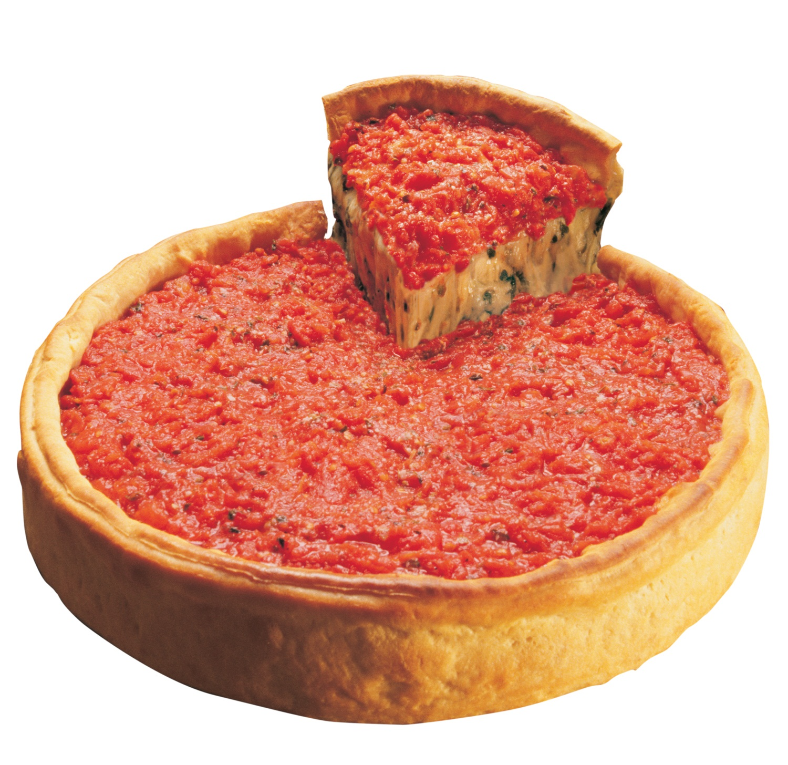
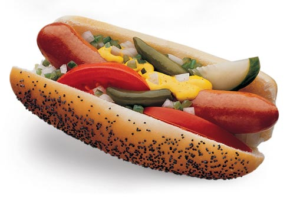
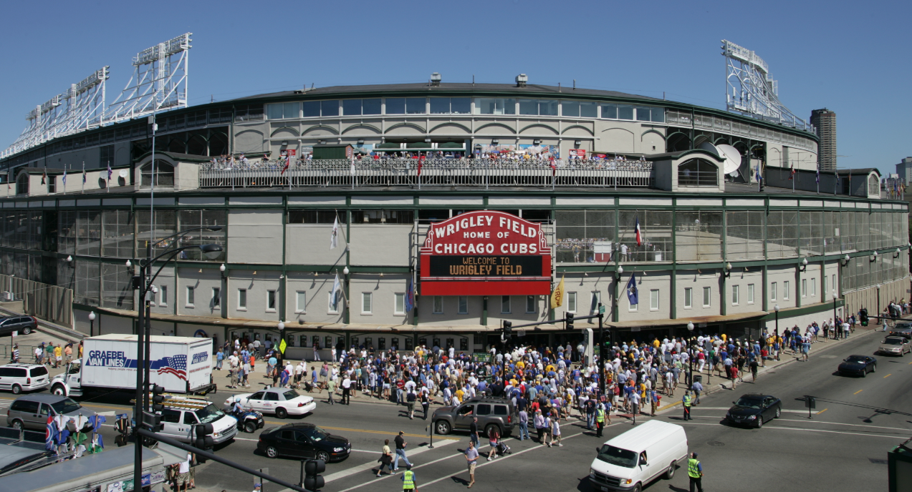

Hallo, Herzlich Willkommen in Chicago!!
Ich möchte euch ein paar Fotos von meiner Stadt zeigen.
Hier ist ein typisches Essen. Chicago Pizza, Chicago Würstchen.


Chicago Pizza ist wie ein Kuchen und ist sehr komisch, aber lecker. Die Tomaten gehen auf die Außenseite. Chicago Würstchen hat Tomate, Gurke, Gewürz, Senf, Zwiebel, Paprika.. aber KEIN Ketchup.
Dieses ist Wrigley Feld, ein sehr berühmtes Baseballstadion.

Und jetzt hier sind einige Fotos, die ich gemacht habe.
Dies ist Marina City. Gibt es ein großes Parkhaus im Keller. Wurde es auf dem Cover eines berühmten Albums vorgestellt. Wilco’s “Yankee Hotel Foxtrot” Wilco ist aus Chicago.

Hier sind Fotos von unserem Zug. Es ist ähnlich dem U-Bahn


Hier ist Lake Shore Drive, ein sehr berühmtes Straße in Chicago. Dieses ist See Michigan.

Hier sind ein paar Fotos von unseren großen Gebäuden.


Ruft euch mich an, wenn euch zu Besuch kommen!